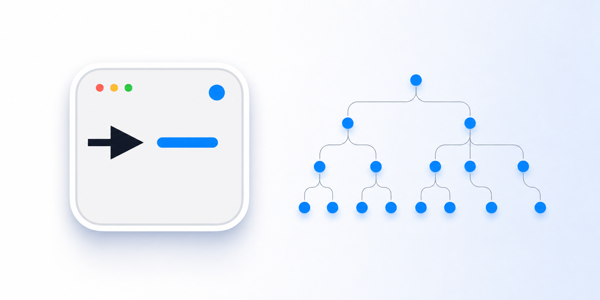

A hierarchy, not a pile of terminals
Root managers, sub-managers, and leaves have explicit identities and scoped tools. Communication follows the tree, so context stays bounded.
Vigil gives your agents a live manager–worker tree. Delegate recursively, steer any node, and let verified summaries roll back to the root—without replacing the native terminal you already trust.
macOS 14+ · Apple Silicon · signed and notarized · requires at least one supported agent CLI

▶Watch a manager split work across Claude Code, Codex, and OpenCode, including a sub-manager that delegates its own branch of the task.
Root managers, sub-managers, and leaves have explicit identities and scoped tools. Communication follows the tree, so context stays bounded.
Vigil hosts each CLI's real TUI. Open a worker, approve a command, steer its plan, or interrupt it without translating through another chat layer.
Finished trees remain inspectable. Review full node transcripts and resume through Claude, Codex, or OpenCode's native session mechanism.